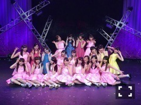
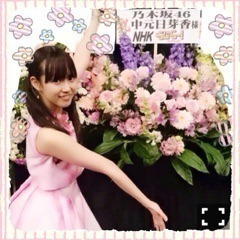
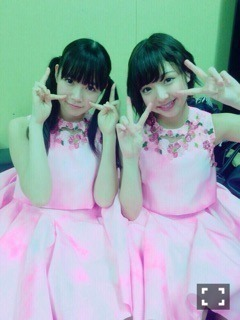

| 2015/04 21 Tue | ひめたん-OoO-その536 |
アンダーライブ
無事千秋楽を迎えました！

11thアンダー歌衣装♪
私が2ヶ月半やってきた
11thアンダーセンターとしての務めも
これにて終了。
千秋楽のアンコールでは手紙という形で
3rdシーズン、そして11thシングルの
締めをさせていただきました
私が最初アンダーセンターに任命されて
みんなにとってどんな存在に
なれるのかなって考えたとき
選抜になった経験がほとんどない私は
残念ながら"新しい風"に
なってあげることはできない。
でも、だからこそ、
アンダーメンバーとして過ごす
時間の方が圧倒的に多い私だからこそ
みんなの気持ちがわかるような気がして
それが私の強みになってくれたら
いいなと思っていました。
今までのセンターといえば
孤高な存在であり、
リーダー的な存在であり、
何も言わずにひとりで
みんなの先頭に立つ
そんな印象がありました
ところが、私には自信がなくて
このチームの先頭に立つなんて
とてもできなかった
そんな私が11th期間を通して
掲げていたテーマは
「みんなで、共に成長する」
もちろん、個々の輝きは大切。
同時に、みんなで一緒に前進していける
優しさやチームワークも
大切にしたいなというのが
私の理想でした。
センターの間は、みんなの前では
気丈に振る舞おうと決めてきました
本当は不安でいっぱいだったけれど
それでもセンターは
強く在るべきだと思ったし
悩むのはひとりで十分だ、と。
でも、ほんとはみんな
私が強がっていることに
気づいてくれていたんだよね。
気づいていて、
ひめのことだからきっと
話そうとしないことも知っていたから
そっとしてくれていたんだよね
「何かあったら言ってね」と
よく声をかけてくれていたんだけれど
それさえも私を
わかってくれての言葉だと
気づいたのは最後の最後になってからでした。
私は本来センターになるには
実力、経験値からしたら力不足で
まだまだ未熟。頼りなかったと思います
それでもメンバー、ファンのみなさん、
周りの人に支えられて
センターに立つことができた
みなさんが私をセンターにしてくれた
そう思うと頭が上がりません
本当にありがとうございました。

そしてライブのあとは
らじらー！サンデー
みなさん聞いてくれましたか？
ゲストはいくちゃんでした！
お誕生日お祝いしてもらったり
ひめたんびーむのアダルトver.できたり
今週も楽しかったー(＊´v`＊)
おたよりもリツイートも
たくさんありがとう♡
「目指せ！センター！」のコーナーでは
いくちゃんとひめたんで
生歌・生ピアノ披露しました～♪
緊張しちゃって声震えちゃった( >_< )
でも、いくちゃんのピアノは
本当に心地が良かったし
いくちゃんの歌が加わった時は
さすが鳥肌ものでした。
この日のために
広いスタジオ・グランドピアノと
最高の環境を用意してくださって
らじらー！ほんとに素敵♡
そういや大学生になって
夜10時以降のいくちゃんが
解禁になってたね( ˇωˇ )
巻き舌対決なんてもう
いつもの深夜テンションの
いくちゃんそのものだったよ～
そんないくちゃんを私は
若干引き気味に(小声)、でもやっぱり
かわいいなって思いながら眺めてます♡
タイトルコール揃わなかったのは
ちょっと悔しかったな～(笑)
リベンジしようねいくちゃん！
また来てね！
次回もお楽しみに\( ˆoˆ )/


あ、そうそう
マサカメTVは見てくれたかな？
ひとりでバラエティーに出演するのは
初めてだったので
心細かったのですが
みなさんとっても優しくて
のびのびできたよー\( ˆoˆ )/
楽しくて役に立つ
節約術をたくさん学んだので
みなさんもやってみてね☆
卵は...なんでああなっちゃうんだろ......
最後に告知！
4/24 street JACK
4/30 BUBKA
5/9 BOMB
発売です♡
チェックしてみてね(´,,•ω•,,｀)
それから！
来週のバナナムーンGOLDに
高山・西野・中元が登場します♡
高校卒業してリミットなくなったから
いつか出演したいな～て
夢のように思っていたのですが
まさかこんなにも早く
実現するなんて( ´•̥ω•̥` )
楽しみ！！

いつもたくさんのコメント
ありがとうございます
アンダーライブ、
楽しいことだけじゃなくて
大変なこともあったけれど
みなさんからの応援コメントに
たくさん背中を押していただいて
なんとか乗り越えられました( >_< )♡
本当にありがとう！
完走したよ！
(＊´・ω・＊)
コメント(1150)
2015/04/21 00:06